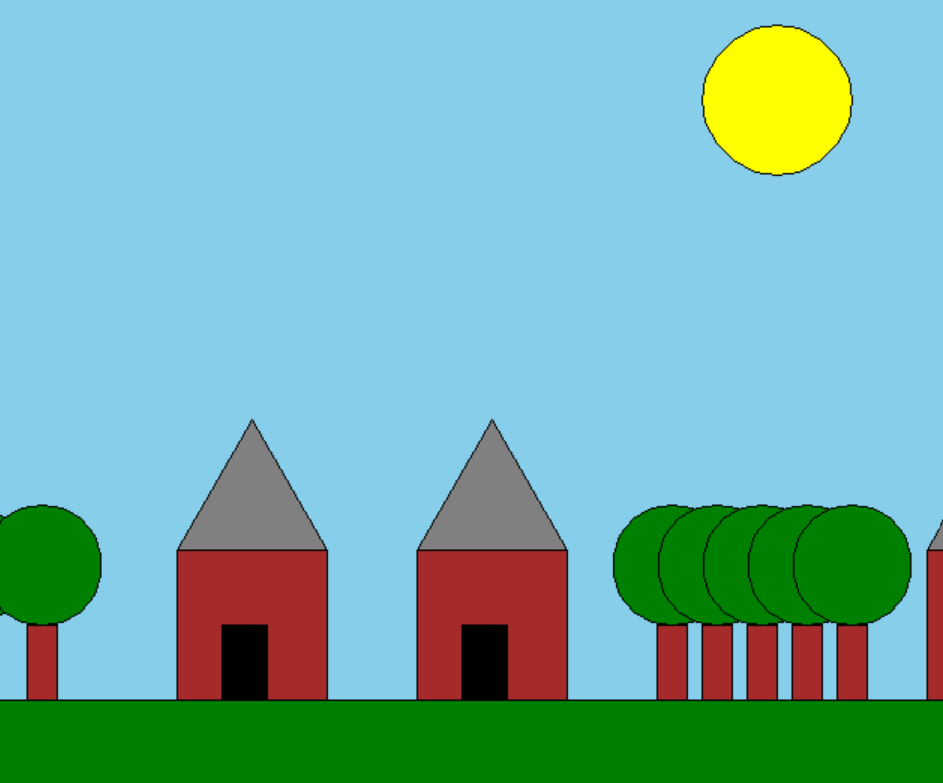

Refactored Project 2 by breaking the scene into reusable functions: draw_ground, draw_sun, draw_house, and draw_tree_line. Added multiple houses and more trees for a richer scene.

'''
Liam Stewart
I refactored the original project by breaking up the draw_scene function into
smaller functions such as draw_ground, draw_sun, draw_house, and draw_tree_line.
This made the functions a lot easier to reuse and read so I added some extra houses
and trees to the original scene.
'''
# loads the Turtle graphics module, which is a built-in library in Python
import turtle
import math
def setup_turtle():
"""Initialize turtle with standard settings"""
t = turtle.Turtle()
t.speed(0) # Fastest speed
screen = turtle.Screen()
screen.title("Turtle Graphics Assignment")
return t, screen
def draw_rectangle(t, width, height, fill_color=None):
"""Draw a rectangle with optional fill"""
if fill_color:
t.fillcolor(fill_color)
t.begin_fill()
for _ in range(2):
t.forward(width)
t.right(90)
t.forward(height)
t.right(90)
if fill_color:
t.end_fill()
def draw_square(t, size, fill_color=None):
"""Draw a square with optional fill"""
if fill_color:
t.fillcolor(fill_color)
t.begin_fill()
for _ in range(4):
t.forward(size)
t.right(90)
if fill_color:
t.end_fill()
def draw_triangle(t, size, fill_color=None):
"""Draw an equilateral triangle with optional fill"""
if fill_color:
t.fillcolor(fill_color)
t.begin_fill()
for _ in range(3):
t.forward(size)
t.left(120)
if fill_color:
t.end_fill()
def draw_circle(t, radius, fill_color=None):
"""Draw a circle with optional fill"""
if fill_color:
t.fillcolor(fill_color)
t.begin_fill()
t.circle(radius)
if fill_color:
t.end_fill()
def draw_polygon(t, sides, size, fill_color=None):
"""Draw a regular polygon with given number of sides"""
if fill_color:
t.fillcolor(fill_color)
t.begin_fill()
angle = 360 / sides
for _ in range(sides):
t.forward(size)
t.right(angle)
if fill_color:
t.end_fill()
def draw_curve(t, length, curve_factor, segments=10, fill_color=None):
"""
Draw a curved line using small line segments
Parameters:
- t: turtle object
- length: total length of the curve
- curve_factor: positive for upward curve, negative for downward curve
- segments: number of segments (higher = smoother curve)
- fill_color: optional color to fill if creating a closed shape
"""
if fill_color:
t.fillcolor(fill_color)
t.begin_fill()
segment_length = length / segments
# Save the original heading
original_heading = t.heading()
for i in range(segments):
# Calculate the angle for this segment
angle = curve_factor * math.sin(math.pi * i / segments)
t.right(angle)
t.forward(segment_length)
t.left(angle) # Reset the angle for the next segment
# Reset to original heading
t.setheading(original_heading)
if fill_color:
t.end_fill()
def jump_to(t, x, y):
"""Move turtle without drawing"""
t.penup()
t.goto(x, y)
t.pendown()
#YOU MUST add function calls in this draw_scence function defintion
# to create your scence (No statements outside of function definiions)
def draw_scene(t):
"""Draw a colorful scene with various shapes"""
# Set background color
screen = t.getscreen()
screen.bgcolor("skyblue")
# Original Project 2 scene
draw_ground(t)
draw_sun(t, 200, 150)
draw_house(t, -200, -100)
draw_tree_line(t, 120, -150, 5, 30)
# Enhanced Project 3 scene
draw_tree_line(t, -600, -150, 7, 50)
draw_house(t, -40, -100)
draw_house(t, 300, -100)
# Ground
def draw_ground(t):
jump_to(t, -500, -200)
draw_rectangle(t, 1000, 200, "green")
# Sun
def draw_sun(t, x, y):
jump_to(t, x, y)
draw_circle(t, 50, "yellow")
# House
def draw_house(t, x, y):
jump_to(t, x, y)
draw_square(t, 100, "brown")
# Roof
jump_to(t, x, y)
draw_triangle(t, 100, "grey")
# Door
jump_to(t, x + 30, y - 50)
draw_rectangle(t, 30, 50, "black")
# Line of trees
def draw_trees(t, x, y):
# Tree trunk
jump_to(t, x, y)
draw_rectangle(t, 20, 50, "brown")
# Tree top
jump_to(t, x + 10, y)
draw_circle(t, 40, "green")
def draw_tree_line(t, start_x, start_y, count, spacing):
for i in range(count):
draw_trees(t, start_x + i * spacing, start_y)
# This is the main() function that starts off the execution
def main():
t, screen = setup_turtle()
draw_scene(t)
screen.mainloop()
# if this script is executed, call the main() function
# meaning when is file is run directly
if __name__ == "__main__":
main()